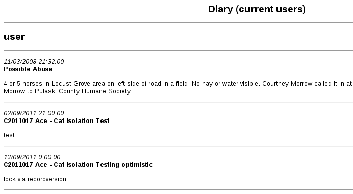

10 General Diary
The general diary is an extremely flexible diary based system that can track anything task-based in nature. You use it to set reminders for a particular date and time.
Each user of the system has their own view into the general diary and they can monitor both diary notes that have been issued to them by other staff members and diary notes that they have created for other staff members. If you have email addresses for your user accounts and you've configured the system email account, you can have the system email everyone's diary notes to them each day.
10.1 Adding a New Diary Note

To add a new diary note to the system, navigate to ASM->Add Diary Note.
You will be presented with the diary note screen. The first thing to fill in is who the note is for. There is a drop down list at the top of the screen, listing all the system users and roles. If you select a role, all users who have that role will receive the note.
Select a date and time to remind the person. Note that the time field is not actually used for anything by the system, it is simply shown on the diary entry when it is printed off. Diary notes will appear on the main screen for the user once the day on the note reaches today.
Enter a subject and the actual text of the diary note next. Leave the completed field blank. This field will be the date the diary note was actioned by the person the note is for, and they should come back and complete it when they have done whatever the diary note is for (even if it is just acknowledging that they have read the note).
10.2 Viewing My Diary Notes
To view all the diary notes for the current user, or created by the current user, go to the home screen or navigate to ASM->View My Diary Notes.
You will be given a list of all your diary notes. You may edit them to mark diary notes for you completed, or even amend diary notes you have created for other people. Diary notes in the future (after today), will be highlighted to show they are not yet current. If you choose to show completed notes, they will be greyed out to illustrate this.
If you are not a superuser and the diary note was not created by you, you will not be permitted to change the subject and note text. Instead, you can add comments if necessary.
10.3 Diary calendar

The diary calendar allows you to see your uncompleted diary notes on a daily/weekly or monthly calendar view.
10.4 Printing the General Diary
To print off the general diary for all outstanding notes (notes upto and including today), install and run the Diary (all users) or Diary (current user) reports from Settings->Reports->Browse sheltermanager.com.

You will be shown a report of currently outstanding diary notes, grouped by who the notes are for and sorted into date order (oldest notes will be shown at the top of the list to be done first).
10.5 Diary Tasks
In addition to the normal facilities offered by the general diary, Animal Shelter Manager allows you a special type of diary note, called a “Diary Task”. A diary task is a group of diary notes that can be added to the system at relative dates with variable information applicable to animals.
This sounds far more complicated than it is, so let us use an example:
Suppose your shelter runs its own clinic and they need to know when young animals need to be neutered.
The problem with a regular diary note in this scenario is that there are two reminders that need to go together - the first is that the animal must be starved before the operation, as well as a reminder for the operation itself.
The solution is to create a diary task with two task items - one for the starving and one for the neutering the following day. Diary task items do not have a concept of a date - they are expressed as a day value relative to today, called a day pivot. This is because diary tasks are templates for creating diary notes.
In the example above, we would create a new diary task called “Starve and Neuter”. The task would have two items on its list (diary tasks can have an unlimited number of items); one for the starving and one for the neutering. The day pivot on the starving will be a 0 - zero means that the system should ask the user for the actual date to go on that task when they apply it to the animal (after all, you can book a neuter operation for any time). The day pivot on the operation will be a 1 - because it occurs one day after the starving. This is because diary tasks are cumulative - each one is performed in order and the day pivot is taken relative to the date on the task that ran before it.
If we created another task for after the operation, say “Check on the animal in a week”, then we would set the day pivot to 7, because the task comes after the operation and it should generate a reminder 7 days from the operation.
The next thing to look at is the content of the data itself - it's alright having a task that says “Starve Animal” and “Neuter Animal”, but how do you know which animal? Simple, the wordkeys we use when generating documents can also be embedded in the subject and note text of a diary task, to be replaced by the real thing when the task is executed.
This means that the subject of the starve task could be “Starve <<ShelterCode>> <<AnimalName>>” for example, which would give the note the animal's shelter code and name in the subject line, so you knew which animal the diary note referred to.
Even if your task has only one item, diary tasks are still handy to use because they can be called up and attached to animals very quickly without the need for the user to type a whole new note.
10.5.1 Creating New Diary Tasks

Diary tasks can be edited under ASM->Edit Diary Tasks and attached to both animals and owners from the toolbar buttons on their detail tabs.
To add a new task, click on the new button. A screen asking for the name of the diary task will appear, along with a list of task items below it and another toolbar. Use the task items toolbar to add, edit and delete task items. Optionally, you can specify whether you want this diary task to be applicable to animals or owners.